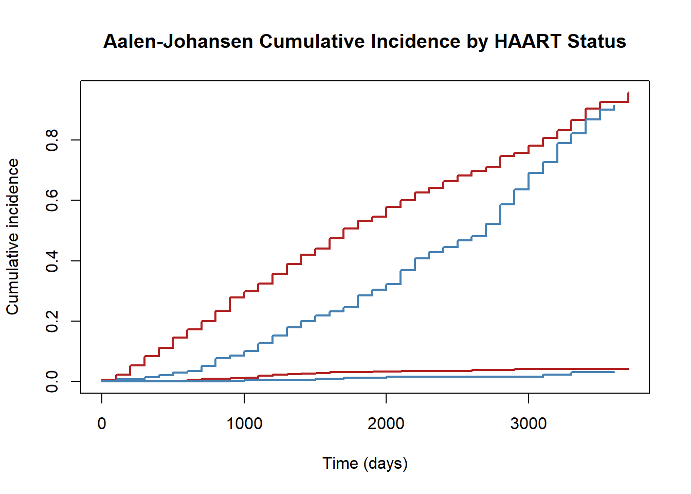

After completing this chapter, you will be able to:
Distinguish risk at time t, restricted mean survival time (RMST), and hazard ratios as causal estimands, and articulate why hazard ratios have problematic causal interpretations
Apply the Causal Roadmap to move from a clinical question to a survival estimand, identification assumptions, and estimator choice
Map ICH E9(R1) intercurrent event strategies (treatment policy, composite, hypothetical, while-on-treatment, principal stratum) to censoring and handling approaches in survival TMLE
Implement IPCW for informative censoring and diagnose weight instability at long follow-up
Compare cause-specific and subdistribution approaches to competing risks, and understand how continuous-time TMLE handles competing events
Apply survival TMLE to estimate a marginal risk difference at time t with competing risks, using the ART cohort data
The longitudinal methods from the preceding chapters extend naturally to time-to-event outcomes. The main new considerations are: choosing an estimand that maps cleanly to a causal question, handling informative censoring over time, and accounting for competing risks. This chapter uses the Causal Roadmap framework (Petersen and Laan 2014; Dang, Tager, and Petersen 2023) to connect each analytic decision back to the scientific question being asked.
25.1 Why Estimand Choice Matters for Survival Data
In survival analysis, the default approach has been to fit a Cox proportional hazards model and report a hazard ratio. The Causal Roadmap asks us to slow down and separate three steps: (1) define the causal question and estimand, (2) state the identification assumptions, and (3) choose an estimator suited to the data structure (Chen, Petersen, et al. 2023). This separation prevents the common mistake of letting the statistical model dictate the causal question.
25.1.1 Risk at Time t (Cumulative Incidence)
The counterfactual risk (cumulative incidence) at a pre-specified time point t:
\[\Psi = P(T^{a=1} \leq t) - P(T^{a=0} \leq t)\]
This is a marginal risk difference with a clear causal interpretation: “If everyone in the population received treatment versus control, how much would the probability of the event by time t differ?” It is compatible with regulator recommendations for trial estimands and does not require proportional hazards.
25.1.2 Restricted Mean Survival Time (RMST)
The RMST up to time \(\tau\) is the area under the survival curve from 0 to \(\tau\):
\[\text{RMST}(\tau) = \int_0^\tau S(t) \, dt\]
The causal contrast \(\text{RMST}^{a=1}(\tau) - \text{RMST}^{a=0}(\tau)\) summarizes the entire survival curve up to \(\tau\). It has a natural clinical interpretation as the difference in expected event-free time over a defined horizon, and does not require proportional hazards (Stensrud et al. 2019).
25.1.3 The Hazard Ratio Problem
Hazard Ratios Are Not Straightforward Causal Parameters
Built-in selection bias: The hazard at time t is defined only among survivors to t. Even in a perfectly executed randomized trial, if treatment is effective, high-risk individuals are depleted from the placebo arm faster than from the treatment arm. Comparing hazards at later times therefore compares groups with systematically different baseline risk profiles. This means the population-level hazard ratio conflates the treatment effect with differential selection of survivors.
Non-collapsibility: The conditional HR (within strata) does not equal the marginal HR, even without confounding. This means that covariate adjustment in a Cox model not only affects precision and bias, but actually changes the estimand being targeted. Researchers who adjust for covariates to handle informative censoring may inadvertently redefine their target quantity.
Dependence on censoring distribution: Under non-proportional hazards, the estimand targeted by Cox regression is defined implicitly through an estimating equation that depends on the censoring distribution. Two trials in identical populations with different accrual patterns or follow-up durations can produce different “true” hazard ratios, even if the treatment effect is the same.
Non-collapsibility is easy to mistake for confounding, so it is worth seeing once with numbers. The example below has no confounding at all: treatment is split evenly within each of two risk strata. The treatment odds ratio is exactly 2 inside each stratum, yet the marginal odds ratio, computed after averaging the risks across strata, is not 2.
Show code
odds <-function(p) p / (1- p)p0 <-c(low_risk =0.10, high_risk =0.50) # untreated risk in each stratump1 <-sapply(p0, function(p) { o <-odds(p) *2; o / (1+ o) }) # within-stratum OR = 2risk1 <-mean(p1); risk0 <-mean(p0) # equal strata, treatment unconfoundedmarginal_OR <-odds(risk1) /odds(risk0)round(c(conditional_OR =2, marginal_OR = marginal_OR), 3)
conditional_OR marginal_OR
2.000 1.719
The conditional odds ratio is 2 in both strata, but the marginal odds ratio is about 1.7. Nothing is biased; the two numbers simply answer different questions, and the odds ratio does not average across strata the way a risk difference does. The hazard ratio behaves the same way, which is why adjusting or not adjusting a Cox model shifts the hazard ratio even in a randomized trial, and why this book targets collapsible risk-scale estimands such as the risk difference and the difference in restricted mean survival time.
25.2 The Causal Roadmap for Survival Data
The Causal Roadmap (Petersen and Laan 2014; Dang, Tager, and Petersen 2023) provides a systematic framework for integrating causal inference and statistical estimation. Applied to a time-to-event RCT or observational study, the steps are:
Causal model and question: Define the counterfactual data structure, including potential outcomes under each treatment. What is the ideal experiment?
Causal estimand: Express the treatment effect as a function of counterfactual outcomes (e.g., risk ratio at time t).
Observed data and identification: Specify how the observed data relates to the ideal experiment, including what gets censored and why.
Identification assumptions: State consistency, positivity (for both treatment and censoring), and conditional exchangeability. Different analyses require different assumptions of different strengths.
Statistical estimand: The observed-data parameter that equals the causal estimand under the identification assumptions.
Estimator: Choose an estimator with desirable properties (efficiency, robustness, doubly robust inference).
Sensitivity analysis: Assess the impact of potential assumption violations.
Different Questions, Different Assumptions
A single dataset can support multiple causal analyses, each targeting a different estimand and requiring different identification assumptions. For example, using the SUSTAIN-6 cardiovascular outcome trial as an illustration (Chen, Rytgaard, et al. 2023; Marso et al. 2016):
Intent-to-treat: What is the effect of being assigned to semaglutide vs. placebo? Only requires that loss-to-follow-up is non-informative.
On-treatment (right-censoring): What would the effect be if all patients adhered to their assigned treatment? Requires that treatment discontinuation for any reason is conditionally independent of MACE given baseline covariates—a much stronger assumption.
On-treatment (competing risks): What is the effect on MACE occurring before treatment discontinuation due to adverse events? Requires only that discontinuation for reasons other than adverse events is conditionally independent of MACE—arguably more plausible than the right-censoring assumption.
These three analyses use the same data but answer different clinical questions, have different estimands, and require different assumptions. The Causal Roadmap forces explicit articulation of each.
25.3 ICH E9(R1) Intercurrent Events and Censoring Strategies
The ICH E9(R1) addendum defines five strategies for intercurrent events. Each maps to a specific approach for how censoring or outcome handling is implemented in survival TMLE (Rufibach 2019).
Table 25.1: ICH E9(R1) strategies mapped to survival TMLE approaches
ICH E9(R1) Strategy
Description
Survival TMLE Implementation
Treatment policy
Outcome observed regardless of intercurrent event
No censoring at intercurrent event; analyze all observed outcomes. This is the survival analogue of “intent-to-treat”
Composite
Intercurrent event becomes part of the outcome
Redefine the event indicator to include the intercurrent event (e.g., PFS = min(progression, death))
Hypothetical
Outcome in a world where the intercurrent event could not occur
Censor at intercurrent event and use IPCW to adjust for informative censoring. Alternatively, estimate via continuous-time TMLE with the censoring mechanism modeled
While on treatment
Outcome while receiving assigned treatment
Censor at treatment discontinuation; model the censoring mechanism. Estimand differs from hypothetical: targets risk while on treatment rather than risk in absence of intercurrent event
Principal stratum
Effect among those who would not experience the intercurrent event under either treatment
Requires principal stratification methods; not handled by standard survival TMLE
Censoring Is Part of the Estimator, Not the Estimand
A key distinction from the estimand framework: the decision to censor at an intercurrent event is an estimation strategy, not a definition of the quantity of interest. The estimand comes first (what would we like to know?), and the censoring approach follows (how do we estimate it from data where the intercurrent event occurs?). Both the hypothetical and while-on-treatment strategies may censor at the same event, but the estimand they target differs, and this difference manifests in the choice of summary measure (Rufibach 2019).
25.4 Informative Censoring and IPCW
When censoring depends on covariates that also predict the outcome, naive Kaplan-Meier or Cox estimates are biased. Inverse probability of censoring weighting (IPCW) applies the same logic from the IPTW chapter to the censoring mechanism: upweight individuals who remain uncensored but have covariate profiles similar to those who were censored.
At each time point \(t_k\), the cumulative IPCW weight is:
Because IPCW weights are a product over time points, instability compounds exponentially. With per-period uncensored probability of 0.95, after 20 time points the weight is \(1/0.95^{20} \approx 2.65\); at 0.80 per period, weights explode to \(1/0.80^{20} \approx 87\). Positivity violations accumulate, effective sample size shrinks, and a few individuals can dominate the estimate.
Remedies:
Truncate weights (with sensitivity analysis on the truncation threshold)
Restrict follow-up to a horizon with stable weights
Use stabilized weights: \(SW_C(t_k) = \prod_{j=1}^k \frac{P(C > t_j \mid C > t_{j-1})}{P(C > t_j \mid C > t_{j-1}, \bar{A}_{j-1}, \bar{L}_{j-1})}\)
Use TMLE, whose targeting step provides additional stabilization relative to pure IPCW
25.5 Competing Risks
A competing risk is an event that prevents the outcome of interest from being observed. When studying time to cardiovascular death, non-cardiovascular death is a competing event. Competing risks have been consistently under-addressed in time-to-event RCTs (Austin and Fine 2017).
25.5.1 Two Classical Approaches
Cause-specific approach: Censor at competing events. Estimates the cause-specific hazard—the instantaneous rate of the event of interest among those who have not yet experienced any event. However, 1 minus the cause-specific Kaplan-Meier estimate does not have a probability interpretation when competing events exist, because it ignores that some censored individuals experienced the competing event rather than remaining at risk.
Subdistribution (Fine-Gray) approach: Keep individuals in the risk set after competing events. Directly models the cumulative incidence function (CIF): the actual probability of the event by time t, accounting for the fact that competing events remove individuals from eligibility. The CIF is the quantity patients and clinicians typically want for planning.
25.5.2 Connecting Competing Risks to the Causal Roadmap
The choice between approaches is an estimand choice, not a statistical one:
“What would the risk of MACE be if patients could not die from other causes?” — This is a hypothetical estimand. Estimate via cause-specific IPCW, treating non-CV death as informative censoring. Requires the (untestable) assumption that the competing event mechanism is conditionally independent of the outcome.
“What is the actual probability of MACE by time t, given that patients can also die from other causes?” — This is the cumulative incidence (CIF) estimand. Estimate via Aalen-Johansen or subdistribution methods. This is the clinically relevant quantity for prognostic planning.
“What is the effect on MACE occurring before treatment discontinuation due to adverse events?” — This targets a competing-risk cumulative incidence where treatment discontinuation is the competing event. This is the estimand used in the SUSTAIN-6 competing risk analysis (Chen, Rytgaard, et al. 2023).
When the Competing Event Tells the Story
In the SUSTAIN-6 trial analysis, semaglutide reduced MACE risk but increased treatment discontinuation due to adverse events. The competing risk analysis revealed that the increased discontinuation risk was larger in magnitude than the decreased MACE risk. This trade-off is fundamentally an estimand choice issue: the competing risk analysis answers a different clinical question than the right-censoring analysis, and the difference in results reflects this, rather than a modeling artifact (Chen, Rytgaard, et al. 2023).
25.6 Continuous-Time vs. Discrete-Time Survival TMLE
Standard survival TMLE implementations (e.g., survtmle) discretize continuous event times into bins and apply longitudinal TMLE within each bin. This works well when the time grid is coarse relative to the event rate, but can introduce problems when applied to continuous-time survival data (Chen, Rytgaard, et al. 2023; Rytgaard, Gerds, and Laan 2021):
Bias from discretization: Binning changes the causal question (from continuous to discrete time) and can shift point estimates toward the null.
Variance instability: Fine bins with few events per bin lead to unstable influence-curve-based variance estimates.
Grid sensitivity: Results can depend on the choice of bin width.
Representing the observed data through counting processes and intensities
Estimating conditional cause-specific hazards using Cox regression or penalized Cox (coxnet) via Super Learner
Applying a targeting step that solves the efficient influence curve equation in continuous time
In the SUSTAIN-6 application, continuous-time TMLE provided 7–29% efficiency gains over unadjusted Kaplan-Meier and Aalen-Johansen estimators, while discrete-time TMLE with non-optimized bin widths sometimes performed worse than the unadjusted estimators (Chen, Rytgaard, et al. 2023).
25.7 Worked Example: Survival TMLE with the ART Cohort
We use the HIV antiretroviral therapy (ART) cohort from the ipw package—the running case study for this handbook. Here we frame a survival analysis: does initiating HAART reduce the risk of death by 2,000 days (approximately 5.5 years), accounting for confounding by indication and the competing event of dropout?
25.7.1 Setup and Data Preparation
Show code
library(survival)library(ipw)library(dplyr)library(ggplot2)# Load the ART cohortdata(haartdat)# Create a point-treatment dataset: first record per patienthaart_surv <- haartdat |>group_by(patient) |>summarise(sex =first(sex),age =first(age),cd4_sqrt_bl =first(cd4.sqrt),A =max(haartind), # ever initiated HAARTtime =max(fuptime), # total follow-up (days)died =max(event), # death indicatordropout =max(dropout), # dropout indicator.groups ="drop" ) |>mutate(# Event type: 0 = censored (administrative), 1 = death, 2 = dropoutevent_type =case_when( died ==1~1L, dropout ==1~2L,TRUE~0L ),# For survival analysis, use death as primary eventtime_years = time /365.25 )cat("Sample size:", nrow(haart_surv), "\n")
The unadjusted Kaplan-Meier ignores confounding by indication (sicker patients, with lower CD4, are more likely to receive HAART and more likely to die) and treats dropout as non-informative censoring.
Show code
km_fit <-survfit(Surv(time, died) ~ A, data = haart_surv)plot(km_fit, col =c("firebrick", "steelblue"), lwd =2,xlab ="Time (days)", ylab ="Survival probability",main ="Naive Kaplan-Meier by HAART Initiation")legend("bottomleft", c("No HAART (A=0)", "HAART (A=1)"),col =c("firebrick", "steelblue"), lwd =2, bty ="n")
Figure 25.1: Naive Kaplan-Meier survival curves by HAART initiation. The crossing or convergence of curves reflects confounding by indication, not the causal effect of treatment.
This naive comparison is misleading: confounding by indication (low CD4 drives both treatment initiation and mortality) biases the comparison.
25.7.3 Cumulative Incidence with Competing Risks (Aalen-Johansen)
Dropout can be treated as a competing event. The Aalen-Johansen estimator provides cause-specific cumulative incidence functions, but does not adjust for confounding.
Show code
# Multi-state event factorhaart_surv$event_ms <-factor(haart_surv$event_type, levels =0:2,labels =c("censored", "death", "dropout"))aj_fit <-survfit(Surv(time, event_ms) ~ A, data = haart_surv)plot(aj_fit, col =c("firebrick", "steelblue"), lwd =2,xlab ="Time (days)", ylab ="Cumulative incidence",main ="Aalen-Johansen Cumulative Incidence by HAART Status")

Figure 25.2: Aalen-Johansen cumulative incidence for death and dropout by HAART status. Accounts for competing risks but not confounding.
25.7.4 Adjusted Survival via IPTW
To address confounding, we compute stabilized IPTW weights using baseline covariates and apply them to the Kaplan-Meier estimator.
Show code
# Propensity score modelps_model <-glm(A ~ age + sex + cd4_sqrt_bl,data = haart_surv, family = binomial)haart_surv$ps <-predict(ps_model, type ="response")# Stabilized weightsp_A <-mean(haart_surv$A)haart_surv$sw <-ifelse(haart_surv$A ==1, p_A / haart_surv$ps, (1- p_A) / (1- haart_surv$ps))# Truncate extreme weights at 1st and 99th percentilesq_bounds <-quantile(haart_surv$sw, c(0.01, 0.99))haart_surv$sw_trunc <-pmin(pmax(haart_surv$sw, q_bounds[1]), q_bounds[2])cat("Weight summary (truncated):\n")
Weight summary (truncated):
Show code
summary(haart_surv$sw_trunc)
Min. 1st Qu. Median Mean 3rd Qu. Max.
0.5442 0.8727 0.9642 1.0000 1.0685 2.0180
Figure 25.3: IPTW-weighted Kaplan-Meier curves adjusting for confounding by age, sex, and baseline CD4. Compare to the naive KM above.
25.7.5 TMLE for Risk Difference at Time t
For a doubly robust estimate, we use survtmle to target the risk difference at a specific time point. This discretizes time but provides both outcome-model and censoring-model robustness.
Show code
library(survtmle)# survtmle requires positive event times; filter patients with time = 0haart_pos <- haart_surv |>filter(time >0)# Target: risk of death by day 2000 (~5.5 years)t_target <-2000fit_tmle <-survtmle(ftime = haart_pos$time,ftype =ifelse(haart_pos$died ==1, 1, 0),trt = haart_pos$A,adjustVars = haart_pos[, c("age", "sex", "cd4_sqrt_bl")],t0 = t_target,SL.ftime =c("SL.glm", "SL.mean"),SL.ctime =c("SL.glm", "SL.mean"),SL.trt =c("SL.glm", "SL.mean"),method ="hazard")# Extract marginal risks and risk differencerisk_A0 <- fit_tmle$est[1]risk_A1 <- fit_tmle$est[2]RD <- risk_A1 - risk_A0cat(sprintf("Risk under A=0 (no HAART): %.4f\n", risk_A0))
Risk under A=0 (no HAART): 0.9519
Show code
cat(sprintf("Risk under A=1 (HAART): %.4f\n", risk_A1))
For continuous-time survival data, the concrete R package avoids discretization entirely. It estimates cause-specific hazards using Cox/penalized Cox models via Super Learner, then applies the continuous-time TMLE targeting step. This approach provided consistent precision gains of 7–29% over unadjusted estimators in the SUSTAIN-6 application, while discrete-time TMLE with naive bin choices sometimes performed worse than unadjusted methods (Chen, Rytgaard, et al. 2023).
Show code
library(concrete)# concrete requires positive event times; filter patients with time = 0haart_pos <- haart_surv |>filter(time >0)# Format data for concreteconcrete_data <-data.frame(T = haart_pos$time,Delta = haart_pos$event_type, # 0 = censored, 1 = death, 2 = dropoutA = haart_pos$A,age = haart_pos$age,sex = haart_pos$sex,cd4_sqrt_bl = haart_pos$cd4_sqrt_bl)# makeITT() creates the intent-to-treat intervention for a binary treatmentintervention <-makeITT()# Format arguments and fit nuisance parameters via Super Learnerconcrete_est <-formatArguments(DataTable = concrete_data,EventTime ="T",EventType ="Delta",Treatment ="A",Covariates =c("age", "sex", "cd4_sqrt_bl"),TargetTime =2000,TargetEvent =1, # death (primary event of interest)Intervention = intervention,MaxUpdateIter =250,CVArg =list(V =5),Verbose =FALSE)# Run continuous-time TMLEconcrete_est <-doConcrete(concrete_est)# Extract results: risk estimates, differences, and CIsconcrete_results <-getOutput(concrete_est)print(concrete_results)
Time Event Estimand Intervention Estimator Pt Est se CI Low CI Hi
<num> <num> <char> <char> <char> <num> <num> <num> <num>
1: 2000 1 Abs Risk A=0 tmle 0.037 0.0073 0.0230 0.052
2: 2000 1 Abs Risk A=0 gcomp 0.041 NA NA NA
3: 2000 1 Abs Risk A=1 tmle 0.018 0.0077 0.0024 0.033
4: 2000 1 Abs Risk A=1 gcomp 0.018 NA NA NA
5: 2000 2 Abs Risk A=0 tmle 0.540 0.0200 0.5000 0.580
6: 2000 2 Abs Risk A=0 gcomp 0.520 NA NA NA
7: 2000 2 Abs Risk A=1 tmle 0.340 0.0280 0.2800 0.390
8: 2000 2 Abs Risk A=1 gcomp 0.350 NA NA NA
SimCI Low SimCI Hi
<num> <num>
1: 0.0190 0.055
2: NA NA
3: -0.0015 0.037
4: NA NA
5: 0.4900 0.590
6: NA NA
7: 0.2700 0.410
8: NA NA
The concrete output provides risk estimates under each treatment level at the target time, along with risk differences and risk ratios with influence-curve-based confidence intervals. Compare these to the discrete-time survtmle estimates above—both target the same estimand, but concrete operates in continuous time.
25.8 Diagnostics for Survival TMLE
25.8.1 Weight Trajectories and Effective Sample Size
The effective sample size (ESS) is the key diagnostic for weighted survival analyses:
# Compute ESS at multiple time horizonstime_grid <-seq(200, 3000, by =200)diag_df <-data.frame(time = time_grid,n_at_risk =NA_real_,max_weight =NA_real_,ess =NA_real_)for (i inseq_along(time_grid)) { tk <- time_grid[i] at_risk <- haart_surv$time >= tk w <- haart_surv$sw_trunc[at_risk] diag_df$n_at_risk[i] <-sum(at_risk) diag_df$max_weight[i] <-max(w) diag_df$ess[i] <-sum(w)^2/sum(w^2)}par(mfrow =c(1, 2), mar =c(4, 4, 3, 1))plot(diag_df$time, diag_df$max_weight, type ="b",pch =19, col ="darkred", lwd =2,xlab ="Time (days)", ylab ="Maximum weight",main ="Weight instability over time")abline(h =10, lty =2, col ="gray50")plot(diag_df$time, diag_df$ess, type ="b",pch =19, col ="steelblue", lwd =2,xlab ="Time (days)", ylab ="Effective sample size",main ="ESS decreases with follow-up")abline(h =50, lty =2, col ="gray50")par(mfrow =c(1, 1))
Figure 25.4: Diagnostic plots for IPTW weights: maximum weight and effective sample size over follow-up. Instability at later time points signals positivity concerns.
25.8.2 Rules of Thumb for ESS
ESS < 50 at your target time point: results are unreliable
Treatment policy: observe outcomes regardless of discontinuation
Effect of receiving treatment
Risk difference at time t (per-protocol)
Hypothetical: censor at discontinuation, use IPCW
Effect on outcome before a competing event
Cumulative incidence difference
Competing risk: model both event types jointly
Summary effect over the survival curve
RMST difference
Integrate the survival curve to \(\tau\)
Recommendation: When to Use What
Small trials, rare events, long follow-up: Be cautious with IPCW; weight instability may dominate. Consider restricting the time horizon.
Continuous-time data from RCTs: Consider concrete for continuous-time TMLE—avoids discretization artifacts and provides reliable efficiency gains over Kaplan-Meier.
Observational studies with many confounders: Use TMLE with Super Learner for both the outcome and censoring models. The doubly robust property protects against misspecification of either model.
Competing risks present: Decide the estimand first. If you want the “hypothetical world without competing events,” use cause-specific IPCW. If you want the actual cumulative incidence, use Aalen-Johansen or TMLE targeting the CIF.
25.10 Check Your Understanding
Questions
Estimand choice: A colleague proposes a confounding-adjusted Cox model for a causal effect on survival. Identify two problems with this approach, and recommend an alternative estimand.
Competing risks: In a study of time to kidney transplant where death is a competing event, when would you (a) treat death as censoring with IPCW, and (b) use a cumulative incidence approach? What identification assumption does (a) require that (b) does not?
Weight diagnostics: ESS drops from 400 to 25 between year 1 and year 3. What does this indicate, and what are two strategies to address it?
Continuous vs. discrete time: An analysis discretizes daily event times into 6-month bins for a discrete-time TMLE. What are two potential consequences of this discretization?
Answers
Non-collapsibility: the adjusted HR estimates a conditional quantity that differs from the marginal causal effect; adjustment changes the estimand, not just bias and precision. (b) Built-in selection bias: hazard comparisons at later times compare differentially selected survivors, even in an RCT. Recommendation: target a marginal risk difference or RMST difference at a pre-specified time point, estimated via TMLE or IPCW.
Cause-specific IPCW targets: “What would transplant rates be if patients could not die?” This requires that death is conditionally independent of transplant given measured covariates (a hypothetical estimand). (b) CIF targets: “What is the actual probability of transplant by time t, given that death can occur?” This requires only that administrative censoring is non-informative. Strategy (a) requires the much stronger assumption that the competing event mechanism is independent of the outcome conditional on covariates.
The ESS drop indicates near-positivity violations in the censoring or treatment model—a few heavily weighted individuals dominate the estimate at later time points. Strategies: (a) Shorten the analysis horizon to where ESS remains adequate. (b) Truncate extreme weights and report truncation thresholds as a sensitivity analysis.
Discretization changes the causal question from continuous to discrete time, and wide bins can bias point estimates toward the null by pooling heterogeneous event times. (b) Bins with few events lead to unstable influence-curve-based variance estimates, potentially yielding confidence intervals that are too wide or too narrow. Consider continuous-time TMLE via concrete to avoid these artifacts.
25.11 Sources and Further Reading
Petersen and Laan (2014) and Dang, Tager, and Petersen (2023): The Causal Roadmap framework for integrating causal modeling and statistical estimation
Chen, Petersen, et al. (2023): Application of the Causal Roadmap to the LEADER cardiovascular outcome trial, demonstrating TMLE’s efficiency and robustness advantages over Cox regression
Chen, Rytgaard, et al. (2023): Continuous-time survival TMLE applied to SUSTAIN-6, with the concrete R package; includes competing risks
Rytgaard, Eriksson, and Laan (2023) and Rytgaard and Laan (2023): Theory of continuous-time TMLE for survival and competing risks
Stensrud et al. (2019): Accessible overview of why hazard ratios are problematic for causal inference in clinical trials
Rufibach (2019): ICH E9(R1) estimand framework applied to time-to-event endpoints
Austin and Fine (2017): Review of competing risks handling in RCTs
Hernán and Robins (2016): Target trial emulation framework and why estimand choice matters
Aalen, Odd O, Richard J Cook, and Kjetil Røysland. 2015. “Does Cox Analysis of a Randomized Survival Study Yield a Causal Treatment Effect?”Lifetime Data Analysis 21 (4): 579–93.
Austin, Peter C, and Jason P Fine. 2017. “Accounting for Competing Risks in Randomized Controlled Trials: A Review and Recommendations for Improvement.”Statistics in Medicine 36 (8): 1203–9.
Chen, David, Maya L Petersen, Helene Charlotte Rytgaard, Randi Grøn, Theis Lange, Søren Rasmussen, Richard E Pratley, et al. 2023. “Beyond the Cox Hazard Ratio: A Targeted Learning Approach to Survival Analysis in a Cardiovascular Outcome Trial Application.”Statistics in Biopharmaceutical Research 15 (3): 524–39.
Chen, David, Helene C W Rytgaard, Edwin C H Fong, Jens M Tarp, Maya L Petersen, Mark J van der Laan, and Thomas A Gerds. 2023. “Concrete: Targeted Estimation of Survival and Competing Risks in Continuous Time.”arXiv Preprint arXiv:2310.19197.
Dang, Lauren E, Issa Tager, and Maya L Petersen. 2023. “A Causal Roadmap for Generating High-Quality Real-World Evidence.”Journal of Clinical and Translational Science 7 (1): e127.
Hernán, Miguel A, and James M Robins. 2016. “Using Big Data to Emulate a Target Trial When a Randomized Trial Is Not Available.”American Journal of Epidemiology 183 (8): 758–64.
Marso, Steven P, Stephen C Bain, Agostino Consoli, Freddy G Eliaschewitz, Esteban Jódar, Lawrence A Leiter, Ildiko Lingvay, et al. 2016. “Semaglutide and Cardiovascular Outcomes in Patients with Type 2 Diabetes.”New England Journal of Medicine 375 (19): 1834–44.
Martinussen, Torben, Stijn Vansteelandt, and Per Kragh Andersen. 2018. “Subtleties in the Interpretation of Hazard Ratios.”arXiv Preprint arXiv:1810.09192.
Petersen, Maya L, and Mark J van der Laan. 2014. “Causal Models and Learning from Data: Integrating Causal Modeling and Statistical Estimation.”Epidemiology 25 (3): 418–26.
Rufibach, Kaspar. 2019. “Treatment Effect Quantification for Time-to-Event Endpoints—Estimands, Analysis Strategies, and Beyond.”Pharmaceutical Statistics 18 (2): 145–65.
Rytgaard, Helene C W, Frank Eriksson, and Mark J van der Laan. 2023. “Estimation of Time-Specific Intervention Effects on Continuously Distributed Time-to-Event Outcomes by Targeted Maximum Likelihood Estimation.”Biometrics 79 (4): 3038–49.
Rytgaard, Helene C W, Thomas A Gerds, and Mark J van der Laan. 2021. “Continuous-Time Targeted Minimum Loss-Based Estimation of Intervention-Specific Mean Outcomes.”arXiv Preprint arXiv:2105.02088.
Rytgaard, Helene C W, and Mark J van der Laan. 2023. “Targeted Maximum Likelihood Estimation for Causal Inference in Survival and Competing Risks Analysis.”Lifetime Data Analysis 29: 4–33.
Stensrud, Mats J, John M Aalen, Odd O Aalen, and Morten Valberg. 2019. “Limitations of Hazard Ratios in Clinical Trials.”European Heart Journal 40 (17): 1378–83.
Source Code
# Time-to-Event, Censoring, and Competing Risks with Targeted Learning {#sec-tte-competing}*Estimated reading time: 35 minutes*::: {.callout-tip}## Learning ObjectivesAfter completing this chapter, you will be able to:1. Distinguish risk at time *t*, restricted mean survival time (RMST), and hazard ratios as causal estimands, and articulate why hazard ratios have problematic causal interpretations2. Apply the Causal Roadmap to move from a clinical question to a survival estimand, identification assumptions, and estimator choice3. Map ICH E9(R1) intercurrent event strategies (treatment policy, composite, hypothetical, while-on-treatment, principal stratum) to censoring and handling approaches in survival TMLE4. Implement IPCW for informative censoring and diagnose weight instability at long follow-up5. Compare cause-specific and subdistribution approaches to competing risks, and understand how continuous-time TMLE handles competing events6. Apply survival TMLE to estimate a marginal risk difference at time *t* with competing risks, using the ART cohort data:::The longitudinal methods from the preceding chapters extend naturally to time-to-event outcomes. The main new considerations are: choosing an estimand that maps cleanly to a causal question, handling informative censoring over time, and accounting for competing risks. This chapter uses the Causal Roadmap framework [@petersen2014causal; @dang2023causal] to connect each analytic decision back to the scientific question being asked.## Why Estimand Choice Matters for Survival Data {#sec-tte-estimands}In survival analysis, the default approach has been to fit a Cox proportional hazards model and report a hazard ratio. The Causal Roadmap asks us to slow down and separate three steps: (1) define the causal question and estimand, (2) state the identification assumptions, and (3) choose an estimator suited to the data structure [@chen2023beyond]. This separation prevents the common mistake of letting the statistical model dictate the causal question.### Risk at Time *t* (Cumulative Incidence)The counterfactual risk (cumulative incidence) at a pre-specified time point *t*:$$\Psi = P(T^{a=1} \leq t) - P(T^{a=0} \leq t)$$This is a marginal risk difference with a clear causal interpretation: "If everyone in the population received treatment versus control, how much would the probability of the event by time *t* differ?" It is compatible with regulator recommendations for trial estimands and does not require proportional hazards.### Restricted Mean Survival Time (RMST)The RMST up to time $\tau$ is the area under the survival curve from 0 to $\tau$:$$\text{RMST}(\tau) = \int_0^\tau S(t) \, dt$$The causal contrast $\text{RMST}^{a=1}(\tau) - \text{RMST}^{a=0}(\tau)$ summarizes the entire survival curve up to $\tau$. It has a natural clinical interpretation as the difference in expected event-free time over a defined horizon, and does not require proportional hazards [@stensrud2019limitations].### The Hazard Ratio Problem::: {.callout-warning}## Hazard Ratios Are Not Straightforward Causal ParametersThe hazard ratio has two fundamental problems as a causal quantity [@stensrud2019limitations; @aalen2015cox; @martinussen2018hazardratios]:1. **Built-in selection bias**: The hazard at time *t* is defined only among survivors to *t*. Even in a perfectly executed randomized trial, if treatment is effective, high-risk individuals are depleted from the placebo arm faster than from the treatment arm. Comparing hazards at later times therefore compares groups with systematically different baseline risk profiles. This means the population-level hazard ratio conflates the treatment effect with differential selection of survivors.2. **Non-collapsibility**: The conditional HR (within strata) does not equal the marginal HR, even without confounding. This means that covariate adjustment in a Cox model not only affects precision and bias, but actually changes the estimand being targeted. Researchers who adjust for covariates to handle informative censoring may inadvertently redefine their target quantity.3. **Dependence on censoring distribution**: Under non-proportional hazards, the estimand targeted by Cox regression is defined implicitly through an estimating equation that depends on the censoring distribution. Two trials in identical populations with different accrual patterns or follow-up durations can produce different "true" hazard ratios, even if the treatment effect is the same.For causal inference, prefer risk differences, risk ratios at fixed time points, or RMST differences [@hernan2016target; @chen2023beyond; @rufibach2019estimands].:::Non-collapsibility is easy to mistake for confounding, so it is worth seeing once with numbers. The example below has no confounding at all: treatment is split evenly within each of two risk strata. The treatment odds ratio is exactly 2 inside each stratum, yet the marginal odds ratio, computed after averaging the risks across strata, is not 2.```{r}#| code-fold: showodds <-function(p) p / (1- p)p0 <-c(low_risk =0.10, high_risk =0.50) # untreated risk in each stratump1 <-sapply(p0, function(p) { o <-odds(p) *2; o / (1+ o) }) # within-stratum OR = 2risk1 <-mean(p1); risk0 <-mean(p0) # equal strata, treatment unconfoundedmarginal_OR <-odds(risk1) /odds(risk0)round(c(conditional_OR =2, marginal_OR = marginal_OR), 3)```The conditional odds ratio is 2 in both strata, but the marginal odds ratio is about 1.7. Nothing is biased; the two numbers simply answer different questions, and the odds ratio does not average across strata the way a risk difference does. The hazard ratio behaves the same way, which is why adjusting or not adjusting a Cox model shifts the hazard ratio even in a randomized trial, and why this book targets collapsible risk-scale estimands such as the risk difference and the difference in restricted mean survival time.## The Causal Roadmap for Survival Data {#sec-causal-roadmap}The Causal Roadmap [@petersen2014causal; @dang2023causal] provides a systematic framework for integrating causal inference and statistical estimation. Applied to a time-to-event RCT or observational study, the steps are:1. **Causal model and question**: Define the counterfactual data structure, including potential outcomes under each treatment. What is the ideal experiment?2. **Causal estimand**: Express the treatment effect as a function of counterfactual outcomes (e.g., risk ratio at time *t*).3. **Observed data and identification**: Specify how the observed data relates to the ideal experiment, including what gets censored and why.4. **Identification assumptions**: State consistency, positivity (for both treatment and censoring), and conditional exchangeability. Different analyses require different assumptions of different strengths.5. **Statistical estimand**: The observed-data parameter that equals the causal estimand under the identification assumptions.6. **Estimator**: Choose an estimator with desirable properties (efficiency, robustness, doubly robust inference).7. **Sensitivity analysis**: Assess the impact of potential assumption violations.::: {.callout-important}## Different Questions, Different AssumptionsA single dataset can support multiple causal analyses, each targeting a different estimand and requiring different identification assumptions. For example, using the SUSTAIN-6 cardiovascular outcome trial as an illustration [@chen2023concrete; @marso2016sustain6]:- **Intent-to-treat**: What is the effect of being *assigned* to semaglutide vs. placebo? Only requires that loss-to-follow-up is non-informative.- **On-treatment (right-censoring)**: What would the effect be if all patients *adhered* to their assigned treatment? Requires that treatment discontinuation for any reason is conditionally independent of MACE given baseline covariates---a much stronger assumption.- **On-treatment (competing risks)**: What is the effect on MACE occurring *before* treatment discontinuation due to adverse events? Requires only that discontinuation for reasons *other* than adverse events is conditionally independent of MACE---arguably more plausible than the right-censoring assumption.These three analyses use the same data but answer different clinical questions, have different estimands, and require different assumptions. The Causal Roadmap forces explicit articulation of each.:::## ICH E9(R1) Intercurrent Events and Censoring Strategies {#sec-ich-e9r1}The ICH E9(R1) addendum defines five strategies for intercurrent events. Each maps to a specific approach for how censoring or outcome handling is implemented in survival TMLE [@rufibach2019estimands].| ICH E9(R1) Strategy | Description | Survival TMLE Implementation ||-------------------:|-------------|---------------------|| **Treatment policy** | Outcome observed regardless of intercurrent event | No censoring at intercurrent event; analyze all observed outcomes. This is the survival analogue of "intent-to-treat" || **Composite** | Intercurrent event becomes part of the outcome | Redefine the event indicator to include the intercurrent event (e.g., PFS = min(progression, death)) || **Hypothetical** | Outcome in a world where the intercurrent event could not occur | Censor at intercurrent event and use IPCW to adjust for informative censoring. Alternatively, estimate via continuous-time TMLE with the censoring mechanism modeled || **While on treatment** | Outcome while receiving assigned treatment | Censor at treatment discontinuation; model the censoring mechanism. Estimand differs from hypothetical: targets risk *while on treatment* rather than risk *in absence of intercurrent event* || **Principal stratum** | Effect among those who would not experience the intercurrent event under either treatment | Requires principal stratification methods; not handled by standard survival TMLE |: ICH E9(R1) strategies mapped to survival TMLE approaches {#tbl-ich-e9r1}::: {.callout-tip}## Censoring Is Part of the Estimator, Not the EstimandA key distinction from the estimand framework: the decision to censor at an intercurrent event is an *estimation strategy*, not a definition of the quantity of interest. The estimand comes first (what would we like to know?), and the censoring approach follows (how do we estimate it from data where the intercurrent event occurs?). Both the hypothetical and while-on-treatment strategies may censor at the same event, but the *estimand* they target differs, and this difference manifests in the choice of summary measure [@rufibach2019estimands].:::## Informative Censoring and IPCW {#sec-ipcw}When censoring depends on covariates that also predict the outcome, naive Kaplan-Meier or Cox estimates are biased. Inverse probability of censoring weighting (IPCW) applies the same logic from the IPTW chapter to the censoring mechanism: upweight individuals who remain uncensored but have covariate profiles similar to those who were censored.At each time point $t_k$, the cumulative IPCW weight is:$$W_C(t_k) = \prod_{j=1}^{k} \frac{1}{P(C > t_j \mid C > t_{j-1}, \bar{A}_{j-1}, \bar{L}_{j-1})}$$::: {.callout-important}## Cumulative Weight InstabilityBecause IPCW weights are a *product* over time points, instability compounds exponentially. With per-period uncensored probability of 0.95, after 20 time points the weight is $1/0.95^{20} \approx 2.65$; at 0.80 per period, weights explode to $1/0.80^{20} \approx 87$. Positivity violations accumulate, effective sample size shrinks, and a few individuals can dominate the estimate.**Remedies**:- Truncate weights (with sensitivity analysis on the truncation threshold)- Restrict follow-up to a horizon with stable weights- Use stabilized weights: $SW_C(t_k) = \prod_{j=1}^k \frac{P(C > t_j \mid C > t_{j-1})}{P(C > t_j \mid C > t_{j-1}, \bar{A}_{j-1}, \bar{L}_{j-1})}$- Use TMLE, whose targeting step provides additional stabilization relative to pure IPCW:::## Competing Risks {#sec-competing-risks}A competing risk is an event that prevents the outcome of interest from being observed. When studying time to cardiovascular death, non-cardiovascular death is a competing event. Competing risks have been consistently under-addressed in time-to-event RCTs [@austin2017competing].### Two Classical Approaches**Cause-specific approach**: Censor at competing events. Estimates the cause-specific hazard---the instantaneous rate of the event of interest among those who have not yet experienced *any* event. However, 1 minus the cause-specific Kaplan-Meier estimate does *not* have a probability interpretation when competing events exist, because it ignores that some censored individuals experienced the competing event rather than remaining at risk.**Subdistribution (Fine-Gray) approach**: Keep individuals in the risk set after competing events. Directly models the cumulative incidence function (CIF): the actual probability of the event by time *t*, accounting for the fact that competing events remove individuals from eligibility. The CIF is the quantity patients and clinicians typically want for planning.### Connecting Competing Risks to the Causal RoadmapThe choice between approaches is an *estimand* choice, not a statistical one:- **"What would the risk of MACE be if patients could not die from other causes?"** --- This is a *hypothetical* estimand. Estimate via cause-specific IPCW, treating non-CV death as informative censoring. Requires the (untestable) assumption that the competing event mechanism is conditionally independent of the outcome.- **"What is the actual probability of MACE by time *t*, given that patients can also die from other causes?"** --- This is the *cumulative incidence* (CIF) estimand. Estimate via Aalen-Johansen or subdistribution methods. This is the clinically relevant quantity for prognostic planning.- **"What is the effect on MACE occurring before treatment discontinuation due to adverse events?"** --- This targets a competing-risk cumulative incidence where treatment discontinuation is the competing event. This is the estimand used in the SUSTAIN-6 competing risk analysis [@chen2023concrete].::: {.callout-tip}## When the Competing Event Tells the StoryIn the SUSTAIN-6 trial analysis, semaglutide reduced MACE risk but *increased* treatment discontinuation due to adverse events. The competing risk analysis revealed that the increased discontinuation risk was larger in magnitude than the decreased MACE risk. This trade-off is fundamentally an estimand choice issue: the competing risk analysis answers a different clinical question than the right-censoring analysis, and the difference in results reflects this, rather than a modeling artifact [@chen2023concrete].:::## Continuous-Time vs. Discrete-Time Survival TMLE {#sec-ct-vs-dt}Standard survival TMLE implementations (e.g., `survtmle`) discretize continuous event times into bins and apply longitudinal TMLE within each bin. This works well when the time grid is coarse relative to the event rate, but can introduce problems when applied to continuous-time survival data [@chen2023concrete; @rytgaard2021continuous]:- **Bias from discretization**: Binning changes the causal question (from continuous to discrete time) and can shift point estimates toward the null.- **Variance instability**: Fine bins with few events per bin lead to unstable influence-curve-based variance estimates.- **Grid sensitivity**: Results can depend on the choice of bin width.A continuous-time TMLE, implemented in the `concrete` R package [@chen2023concrete; @rytgaard2023estimation; @rytgaard2022tmle], avoids these issues by:1. Representing the observed data through counting processes and intensities2. Estimating conditional cause-specific hazards using Cox regression or penalized Cox (coxnet) via Super Learner3. Applying a targeting step that solves the efficient influence curve equation in continuous timeIn the SUSTAIN-6 application, continuous-time TMLE provided 7--29% efficiency gains over unadjusted Kaplan-Meier and Aalen-Johansen estimators, while discrete-time TMLE with non-optimized bin widths sometimes performed worse than the unadjusted estimators [@chen2023concrete].## Worked Example: Survival TMLE with the ART Cohort {#sec-tte-example}We use the HIV antiretroviral therapy (ART) cohort from the `ipw` package---the running case study for this handbook. Here we frame a survival analysis: does initiating HAART reduce the risk of death by 2,000 days (approximately 5.5 years), accounting for confounding by indication and the competing event of dropout?### Setup and Data Preparation```{r}#| label: setup-tte#| code-fold: true#| message: false#| warning: falselibrary(survival)library(ipw)library(dplyr)library(ggplot2)# Load the ART cohortdata(haartdat)# Create a point-treatment dataset: first record per patienthaart_surv <- haartdat |>group_by(patient) |>summarise(sex =first(sex),age =first(age),cd4_sqrt_bl =first(cd4.sqrt),A =max(haartind), # ever initiated HAARTtime =max(fuptime), # total follow-up (days)died =max(event), # death indicatordropout =max(dropout), # dropout indicator.groups ="drop" ) |>mutate(# Event type: 0 = censored (administrative), 1 = death, 2 = dropoutevent_type =case_when( died ==1~1L, dropout ==1~2L,TRUE~0L ),# For survival analysis, use death as primary eventtime_years = time /365.25 )cat("Sample size:", nrow(haart_surv), "\n")cat("Event distribution:\n")table(haart_surv$event_type,dnn ="Event") |>print()cat("\nHAART initiation:\n")table(haart_surv$A,dnn ="HAART") |>print()```### Naive Kaplan-MeierThe unadjusted Kaplan-Meier ignores confounding by indication (sicker patients, with lower CD4, are more likely to receive HAART and more likely to die) and treats dropout as non-informative censoring.```{r}#| label: fig-km-naive#| fig-cap: "Naive Kaplan-Meier survival curves by HAART initiation. The crossing or convergence of curves reflects confounding by indication, not the causal effect of treatment."#| code-fold: showkm_fit <-survfit(Surv(time, died) ~ A, data = haart_surv)plot(km_fit, col =c("firebrick", "steelblue"), lwd =2,xlab ="Time (days)", ylab ="Survival probability",main ="Naive Kaplan-Meier by HAART Initiation")legend("bottomleft", c("No HAART (A=0)", "HAART (A=1)"),col =c("firebrick", "steelblue"), lwd =2, bty ="n")```This naive comparison is misleading: confounding by indication (low CD4 drives both treatment initiation and mortality) biases the comparison.### Cumulative Incidence with Competing Risks (Aalen-Johansen)Dropout can be treated as a competing event. The Aalen-Johansen estimator provides cause-specific cumulative incidence functions, but does not adjust for confounding.```{r}#| label: fig-aalen-johansen#| fig-cap: "Aalen-Johansen cumulative incidence for death and dropout by HAART status. Accounts for competing risks but not confounding."#| code-fold: show# Multi-state event factorhaart_surv$event_ms <-factor(haart_surv$event_type, levels =0:2,labels =c("censored", "death", "dropout"))aj_fit <-survfit(Surv(time, event_ms) ~ A, data = haart_surv)plot(aj_fit, col =c("firebrick", "steelblue"), lwd =2,xlab ="Time (days)", ylab ="Cumulative incidence",main ="Aalen-Johansen Cumulative Incidence by HAART Status")```### Adjusted Survival via IPTWTo address confounding, we compute stabilized IPTW weights using baseline covariates and apply them to the Kaplan-Meier estimator.```{r}#| label: fig-iptw-survival#| fig-cap: "IPTW-weighted Kaplan-Meier curves adjusting for confounding by age, sex, and baseline CD4. Compare to the naive KM above."#| code-fold: show# Propensity score modelps_model <-glm(A ~ age + sex + cd4_sqrt_bl,data = haart_surv, family = binomial)haart_surv$ps <-predict(ps_model, type ="response")# Stabilized weightsp_A <-mean(haart_surv$A)haart_surv$sw <-ifelse(haart_surv$A ==1, p_A / haart_surv$ps, (1- p_A) / (1- haart_surv$ps))# Truncate extreme weights at 1st and 99th percentilesq_bounds <-quantile(haart_surv$sw, c(0.01, 0.99))haart_surv$sw_trunc <-pmin(pmax(haart_surv$sw, q_bounds[1]), q_bounds[2])cat("Weight summary (truncated):\n")summary(haart_surv$sw_trunc)cat("\nEffective sample size:",round(sum(haart_surv$sw_trunc)^2/sum(haart_surv$sw_trunc^2)), "\n")# Weighted KMkm_iptw <-survfit(Surv(time, died) ~ A,data = haart_surv,weights = sw_trunc)plot(km_iptw, col =c("firebrick", "steelblue"), lwd =2,xlab ="Time (days)", ylab ="Survival probability",main ="IPTW-Weighted Kaplan-Meier (Confounding Adjusted)")legend("bottomleft", c("No HAART (A=0)", "HAART (A=1)"),col =c("firebrick", "steelblue"), lwd =2, bty ="n")```### TMLE for Risk Difference at Time *t*For a doubly robust estimate, we use `survtmle` to target the risk difference at a specific time point. This discretizes time but provides both outcome-model and censoring-model robustness.```{r}#| label: tmle-surv#| code-fold: show#| message: false#| warning: falselibrary(survtmle)# survtmle requires positive event times; filter patients with time = 0haart_pos <- haart_surv |>filter(time >0)# Target: risk of death by day 2000 (~5.5 years)t_target <-2000fit_tmle <-survtmle(ftime = haart_pos$time,ftype =ifelse(haart_pos$died ==1, 1, 0),trt = haart_pos$A,adjustVars = haart_pos[, c("age", "sex", "cd4_sqrt_bl")],t0 = t_target,SL.ftime =c("SL.glm", "SL.mean"),SL.ctime =c("SL.glm", "SL.mean"),SL.trt =c("SL.glm", "SL.mean"),method ="hazard")# Extract marginal risks and risk differencerisk_A0 <- fit_tmle$est[1]risk_A1 <- fit_tmle$est[2]RD <- risk_A1 - risk_A0cat(sprintf("Risk under A=0 (no HAART): %.4f\n", risk_A0))cat(sprintf("Risk under A=1 (HAART): %.4f\n", risk_A1))cat(sprintf("Risk difference (A=1 - A=0): %.4f\n", RD))cat(sprintf("Risk ratio: %.3f\n", risk_A1 / risk_A0))```### Continuous-Time TMLE with `concrete`For continuous-time survival data, the `concrete` R package avoids discretization entirely. It estimates cause-specific hazards using Cox/penalized Cox models via Super Learner, then applies the continuous-time TMLE targeting step. This approach provided consistent precision gains of 7--29% over unadjusted estimators in the SUSTAIN-6 application, while discrete-time TMLE with naive bin choices sometimes performed worse than unadjusted methods [@chen2023concrete].```{r}#| label: concrete-tmle#| code-fold: show#| message: false#| warning: falselibrary(concrete)# concrete requires positive event times; filter patients with time = 0haart_pos <- haart_surv |>filter(time >0)# Format data for concreteconcrete_data <-data.frame(T = haart_pos$time,Delta = haart_pos$event_type, # 0 = censored, 1 = death, 2 = dropoutA = haart_pos$A,age = haart_pos$age,sex = haart_pos$sex,cd4_sqrt_bl = haart_pos$cd4_sqrt_bl)# makeITT() creates the intent-to-treat intervention for a binary treatmentintervention <-makeITT()# Format arguments and fit nuisance parameters via Super Learnerconcrete_est <-formatArguments(DataTable = concrete_data,EventTime ="T",EventType ="Delta",Treatment ="A",Covariates =c("age", "sex", "cd4_sqrt_bl"),TargetTime =2000,TargetEvent =1, # death (primary event of interest)Intervention = intervention,MaxUpdateIter =250,CVArg =list(V =5),Verbose =FALSE)# Run continuous-time TMLEconcrete_est <-doConcrete(concrete_est)# Extract results: risk estimates, differences, and CIsconcrete_results <-getOutput(concrete_est)print(concrete_results)```The `concrete` output provides risk estimates under each treatment level at the target time, along with risk differences and risk ratios with influence-curve-based confidence intervals. Compare these to the discrete-time `survtmle` estimates above---both target the same estimand, but `concrete` operates in continuous time.## Diagnostics for Survival TMLE {#sec-surv-diagnostics}### Weight Trajectories and Effective Sample SizeThe effective sample size (ESS) is the key diagnostic for weighted survival analyses:$$\text{ESS}(t) = \frac{\left(\sum_{i: T_i \geq t} w_i(t)\right)^2}{\sum_{i: T_i \geq t} w_i(t)^2}$$```{r}#| label: fig-weight-diagnostics#| fig-cap: "Diagnostic plots for IPTW weights: maximum weight and effective sample size over follow-up. Instability at later time points signals positivity concerns."#| code-fold: show#| fig-width: 9#| fig-height: 4# Compute ESS at multiple time horizonstime_grid <-seq(200, 3000, by =200)diag_df <-data.frame(time = time_grid,n_at_risk =NA_real_,max_weight =NA_real_,ess =NA_real_)for (i inseq_along(time_grid)) { tk <- time_grid[i] at_risk <- haart_surv$time >= tk w <- haart_surv$sw_trunc[at_risk] diag_df$n_at_risk[i] <-sum(at_risk) diag_df$max_weight[i] <-max(w) diag_df$ess[i] <-sum(w)^2/sum(w^2)}par(mfrow =c(1, 2), mar =c(4, 4, 3, 1))plot(diag_df$time, diag_df$max_weight, type ="b",pch =19, col ="darkred", lwd =2,xlab ="Time (days)", ylab ="Maximum weight",main ="Weight instability over time")abline(h =10, lty =2, col ="gray50")plot(diag_df$time, diag_df$ess, type ="b",pch =19, col ="steelblue", lwd =2,xlab ="Time (days)", ylab ="Effective sample size",main ="ESS decreases with follow-up")abline(h =50, lty =2, col ="gray50")par(mfrow =c(1, 1))```### Rules of Thumb for ESS- **ESS < 50** at your target time point: results are unreliable- **ESS drops below 10%** of nominal sample size: consider shortening follow-up- **Sudden ESS drop**: investigate what changed at that time point (e.g., a protocol amendment causing differential censoring)### Censoring Model Calibration```{r}#| label: tbl-cens-calibration#| code-fold: show# Calibration of a simple censoring modelcens_model <-glm( (event_type ==0| event_type ==2) ~ age + cd4_sqrt_bl + A,data = haart_surv, family = binomial)pred_cens <-predict(cens_model, type ="response")risk_groups <-cut(pred_cens,breaks =quantile(pred_cens, probs =seq(0, 1, 0.25)),include.lowest =TRUE)cal_table <-aggregate(cbind(predicted = pred_cens,observed =as.integer(haart_surv$event_type ==0| haart_surv$event_type ==2)),by =list(risk_group = risk_groups),FUN = mean)print(cal_table)```## Practical Guidance {#sec-tte-guidance}::: {.callout-important}## Choosing Your Survival Estimand| If your question is... | Target this estimand | Handle intercurrent events by... ||:---|:---|:---|| Effect of *assignment* to treatment | Risk difference at time *t* (ITT) | Treatment policy: observe outcomes regardless of discontinuation || Effect of *receiving* treatment | Risk difference at time *t* (per-protocol) | Hypothetical: censor at discontinuation, use IPCW || Effect on outcome *before* a competing event | Cumulative incidence difference | Competing risk: model both event types jointly || Summary effect over the survival curve | RMST difference | Integrate the survival curve to $\tau$ |:::::: {.callout-tip}## Recommendation: When to Use What- **Small trials, rare events, long follow-up**: Be cautious with IPCW; weight instability may dominate. Consider restricting the time horizon.- **Continuous-time data from RCTs**: Consider `concrete` for continuous-time TMLE---avoids discretization artifacts and provides reliable efficiency gains over Kaplan-Meier.- **Observational studies with many confounders**: Use TMLE with Super Learner for both the outcome and censoring models. The doubly robust property protects against misspecification of either model.- **Competing risks present**: Decide the estimand *first*. If you want the "hypothetical world without competing events," use cause-specific IPCW. If you want the actual cumulative incidence, use Aalen-Johansen or TMLE targeting the CIF.:::## Check Your Understanding::: {.callout-caution}## Questions1. **Estimand choice**: A colleague proposes a confounding-adjusted Cox model for a causal effect on survival. Identify two problems with this approach, and recommend an alternative estimand.2. **Competing risks**: In a study of time to kidney transplant where death is a competing event, when would you (a) treat death as censoring with IPCW, and (b) use a cumulative incidence approach? What identification assumption does (a) require that (b) does not?3. **Weight diagnostics**: ESS drops from 400 to 25 between year 1 and year 3. What does this indicate, and what are two strategies to address it?4. **Continuous vs. discrete time**: An analysis discretizes daily event times into 6-month bins for a discrete-time TMLE. What are two potential consequences of this discretization?:::::: {.callout-tip collapse="true"}## Answers1. (a) Non-collapsibility: the adjusted HR estimates a conditional quantity that differs from the marginal causal effect; adjustment changes the estimand, not just bias and precision. (b) Built-in selection bias: hazard comparisons at later times compare differentially selected survivors, even in an RCT. **Recommendation**: target a marginal risk difference or RMST difference at a pre-specified time point, estimated via TMLE or IPCW.2. (a) Cause-specific IPCW targets: "What would transplant rates be if patients could not die?" This requires that death is conditionally independent of transplant given measured covariates (a hypothetical estimand). (b) CIF targets: "What is the actual probability of transplant by time *t*, given that death can occur?" This requires only that administrative censoring is non-informative. Strategy (a) requires the much stronger assumption that the competing event mechanism is independent of the outcome conditional on covariates.3. The ESS drop indicates near-positivity violations in the censoring or treatment model---a few heavily weighted individuals dominate the estimate at later time points. Strategies: (a) Shorten the analysis horizon to where ESS remains adequate. (b) Truncate extreme weights and report truncation thresholds as a sensitivity analysis.4. (a) Discretization changes the causal question from continuous to discrete time, and wide bins can bias point estimates toward the null by pooling heterogeneous event times. (b) Bins with few events lead to unstable influence-curve-based variance estimates, potentially yielding confidence intervals that are too wide or too narrow. Consider continuous-time TMLE via `concrete` to avoid these artifacts.:::## Sources and Further Reading- @petersen2014causal and @dang2023causal: The Causal Roadmap framework for integrating causal modeling and statistical estimation- @chen2023beyond: Application of the Causal Roadmap to the LEADER cardiovascular outcome trial, demonstrating TMLE's efficiency and robustness advantages over Cox regression- @chen2023concrete: Continuous-time survival TMLE applied to SUSTAIN-6, with the `concrete` R package; includes competing risks- @rytgaard2023estimation and @rytgaard2022tmle: Theory of continuous-time TMLE for survival and competing risks- @stensrud2019limitations: Accessible overview of why hazard ratios are problematic for causal inference in clinical trials- @rufibach2019estimands: ICH E9(R1) estimand framework applied to time-to-event endpoints- @austin2017competing: Review of competing risks handling in RCTs- @hernan2016target: Target trial emulation framework and why estimand choice matters